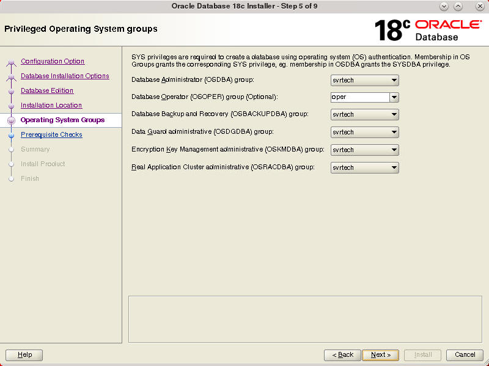

Download the Oracle Database installation image files
(LINUX.X64_180000_db_home.zip ) to a directory of your choice.
For example, you can download the image files to the /tmp
directory.
Create the Oracle home directory and extract the image files
that you have downloaded in to this Oracle home directory:
In the Select Database Installation Option screen, select Single
instance database installation and click Next.
In the Select Database Edition screen, select Enterprise
Edition and click Next.
In the Specify Installation Location screen, select the
directory for Oracle base, which is /u01/app/oracle
and click Next.
The Oracle base directory contains all Oracle software and
configuration-related files installed by the installation
owner.
The Oracle home directory, /u01/app/oracle/product/18.0.0/dbhome_1
where the Oracle Database Software is installed is
automatically populated based on the Oracle base directory.
In the Create Inventory screen, select the inventory
directory and oraInventory group name. Click Next.
Note: The Create Inventory screen comes up only
when you perform any Oracle software installation for the
very first time, asking you for the inventory directory and
the orainventory group name. The inventory
directory is the same for all Oracle software installations.
This screen is not displayed for subsequent installations of
Oracle Database.
In the Privileged Operating System groups screen, select the
system privileges that are required to create a database.
Click Next to start the prerequisite checks.

Description
of Privileged Operating System Groups screen
In the Perform Prerequisite Checks screen, the installer
verifies if the target environment meets the minimum
installation and configuration requirements and reports any
errors.
In the Summary screen, verify the details and click Edit
if you want to make any changes.
Click Save Response File to save the response
file. You can use this response file later to perform a
silent installation of Oracle Database.
Open a terminal window, log in as root and run
the root scripts.
When you run the root scripts, the ORACLE_OWNER
and the ORACLE_HOME environment variables are
set. You are prompted to enter the full path name of the
local bin directory. The script also creates the /etc/oratab
file, which contains information about automatic database
startup and shutdown.
 Perform
a Software-Only Installation of Oracle Database
Perform
a Software-Only Installation of Oracle Database Before You Begin
Before You Begin Install
Oracle Database Software
Install
Oracle Database Software